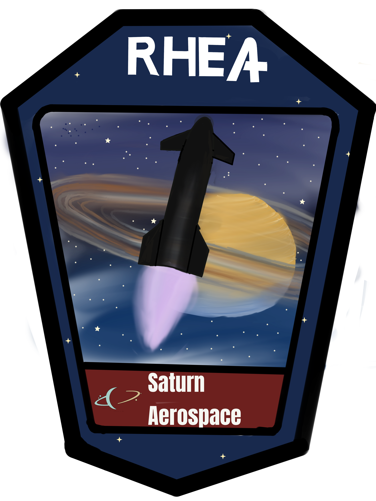

Rhea / Iapetus
The World's Largest
The full stack of Rhea & Iapetus makes it the tallest and most powerful rocket in the world. With this stack, we have achieved things that had never been done before, including full and rapid reusability.
Rhea / Skirt
The Facts
Rhea is built to keep the stack practical across repeated missions. It is meant to lift often, come back cleanly, and keep the program moving without rebuilding the vehicle around each launch.

Engine family
ANTHE engines power the stack and handle the heavy lift to orbit.
Mission role
Built to send cargo to the Lunar surface and support surface buildout.
Flight tempo
Regular Moon missions are the goal by the end of 2026.
The Stack
The Interstage
The interstage keeps the stack clean through separation and helps the vehicle stay composed through the handoff between stages. It supports the repeatable launch flow Rhea is built around.
- Cleaner stage separation keeps the architecture tidy during flight.
- A smoother handoff helps preserve payload capacity and mission flow.
- Repeatable staging makes the vehicle easier to use mission after mission.
Why It Matters
Why the Stack Works
The stack stays practical because the transition between stages is controlled, repeatable, and built for regular use instead of one-off flights.
Rhea / Moon
The Moon With Rhea
Rhea is our most powerful rocket and will be the vehicle sending cargo to the Lunar surface, helping to build cities on the Moon. We aim to have regular moon missions by the end of 2026.